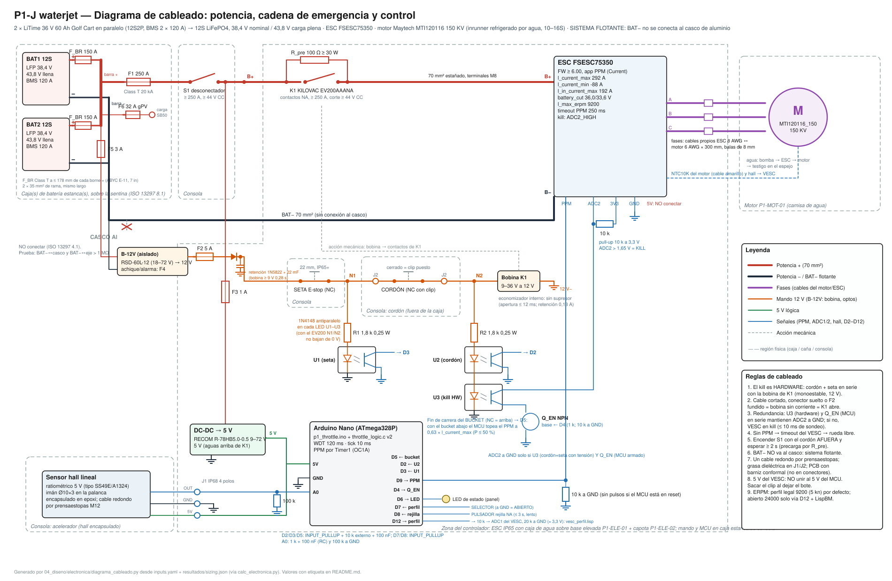

04_diseno/electronica — Electrónica, cadena de seguridad y control de P1
Estado: diseño + firmware + tests de lógica. [NO EJECUTADO en hardware]: nada de esto se probó todavía con componentes reales. Lo verificado: la lógica v2.0 compila en C99 estricto con gcc (-Wconversion -Werror) y pytest -q tests/test_firmware.py pasa (§5.8). El sketch v2.0 NO se compiló para AVR (en esta máquina no hay arduino-cli ni avr-gcc; el test AVR se salta): la cifra de 11 270 B de flash que figuraba acá era de la v1 (arduino-cli 1.5.2, sesión anterior) y no aplica a v2.0 — compilar en T0.0 (§5.5). Los parámetros del VESC se leyeron en el código fuente del firmware (vedderb/bldc, rama master, 2026-10-01).
Etiquetas: [VERIFICADO: fuente] · [CALCULADO] · [ESTIMADO: base] · [SUPUESTO]. Las tablas entre marcas ELEC: las genera calc_electronica.py desde inputs.yaml y resultados/sizing.json: no editarlas a mano.
| Archivo | Qué es |
|---|---|
diagrama_cableado.svg |
Diagrama de cableado: potencia, cadena de emergencia, control, sistema flotante |
diagrama_cableado.py |
Lo genera (svgwrite); rótulos leídos de calc_electronica.compute() |
calc_electronica.py |
Configuración del VESC, precarga, bobina, optos, presupuesto de corte, tabla de verdad; escribe electronica.json, tabla_verdad.csv y los bloques ELEC: de este README (--check solo verifica) |
firmware/throttle_logic.h, .c |
Lógica pura C99 v2.0 del waterjet (armado, rampa, zona muerta, expo, bucket: límite y retención, limpieza de rejilla, perfil costa/abierto, dwell, fallas de sensor, watchdog lógico) |
firmware/p1_throttle/p1_throttle.ino |
Sketch Arduino Nano: E/S (hall, cordón/seta, fin de carrera del bucket D5, selector D7, pulsador de rejilla D8, perfil D12), PPM por Timer1, interrupciones del cordón/seta, WDT de hardware, LED, calibración |
firmware/vesc_perfil.lisp |
Script LispBM del VESC (FW ≥ 6.00): lee D12 por ADC1 y cambia l_max_erpm entre COSTA y ABIERTO (§5.4); sus dos topes de ERPM los reescribe calc_electronica.py |
firmware/p1_throttle/src/ |
Copia idéntica de la lógica (el IDE de Arduino solo compila dentro de la carpeta del sketch). Un test exige que sea idéntica |
../../tests/test_firmware.py |
69 tests (lógica ejecutada desde Python vía gcc + ctypes, coherencia con calc_electronica/electronica.json y vigencia de lo generado) + 1 de compilación AVR opcional |

Regenerar: python 04_diseno/electronica/calc_electronica.py && python 04_diseno/electronica/diagrama_cableado.py (no están en run_all.py: ver §11).
1. Diagrama de cableado

Lectura rápida, de izquierda a derecha:
- Potencia (rojo/negro grueso): dos baterías LiTime 36 V (12S, 36,0–43,8 V) en paralelo (12S2P). Cada batería: borne + → F_BR (Class T de rama en portafusible Blue Sea 5007100, a ≤ 178 mm del borne [VERIFICADO: R06 §5.1, ABYC E-11 7 in; el texto de ABYC lo escribe "175 mm" → montar a ≤ 175 mm]) → cable de rama de 35 mm² → barra +; borne − → 35 mm² → barra −. Barra + → F1 (Class T junto a la barra, protege el cable de 70 mm²) → S1 desconectador → K1 contactor monoestable con R_pre en paralelo → VESC → 3 fases → motor. Barra − → VESC B−. El antichispa no se usa (100 A < I de batería). Cables de rama de igual largo y sección (reparto de corriente, §6
l_in_current_max). Fusibles Class T y no MRBF: el cortocircuito presunto de las dos baterías llega a ≈ 8,8 kA y el MRBF corta solo 2 kA a 58 V (§7, auditoría R2-E3). Toma de carga Anderson SB50 (B-ANDERSON) en las barras +/−, aguas arriba de F1/S1, con su propio fusible F6 (gPV 32 A, B-CHGFUSE) en la barra +: su cable de ≤ 16 mm² no lo protegen los F_BR. - Mando de 12 V (naranja): B-12V (Mean Well RSD-60L-12, entrada 18–72 V [VERIFICADO: Mean Well RSD-60-SPEC 2026-07-09; la RSD-60G es de 9–36 V y no sirve con 12S], conectado a la barra + aguas ARRIBA de F1/S1 con su fusible F5 removible) → F2 → retención (Schottky 1N5822 + 22 mF, B-HOLD: sostiene la bobina ≥ 9 V durante el hueco del riel cuando arranca la bomba de achique contra el límite de corriente del DC-DC, §7) → SETA (NC) → nodo N1 → J2 → CORDÓN (cerrado con el clip puesto) → J2 → nodo N2 → bobina de K1 (EV200AAANA, 9–36 V con economizador) → 12 V−. Cualquier apertura de esa serie (clip afuera, seta pulsada, cable cortado, conector suelto, F2 fundido, bobina abierta, B-12V sin salida) deja la bobina sin corriente y K1 abre: es el corte por hardware que pide R06 §3.2 y §3.5. El cordón y la seta conmutan 12 V (cierre 3,8 A ≤ 130 ms, retención 0,13 A) y al abrir no ven sobretensión inductiva (el economizador limita la fuerza contraelectromotriz a 0 V [VERIFICADO: hoja EV200]): así el interruptor Watski de 12 V – 15 A trabaja dentro de su valor nominal (auditoría H3). Como B-12V está aguas arriba de S1, con S1 abierto y el clip puesto K1 cierra igual (sin efecto: el bus está cortado por S1) y la bobina consume 1,6 W: sacar el clip al dejar el bote.
- Sensado y redundancia (azul): el opto U1 ve N1 (seta) → D3 del Nano; U2 ve N2 (cordón + seta) → D2; U3 también ve N2 y está en serie con el transistor Q_EN (comandado por D4 del Nano) entre la entrada ADC2 del VESC y GND. ADC2 tiene pull-up de 10 kΩ a 3,3 V: si cualquiera de los dos deja de conducir, ADC2 > 1,65 V → kill por software del VESC [VERIFICADO:
timeout.c,KILL_SW_MODE_ADC2_HIGH]. - Control: DC-DC 43,8→5 V (RECOM R-78HB, 9–72 V; alimentado aguas arriba de K1, después de S1 y F3) → Nano y sensor hall A1324 de la palanca del acelerador. PPM por D9 → VESC (pull-down de 10 kΩ en el lado del VESC: con el MCU en reset no hay pulsos). El 5 V del VESC no se une al 5 V del Nano. Consola: fin de carrera del bucket (NC, cerrado = arriba) → D5; selector de perfil COSTA/ABIERTO → D7; pulsador de limpieza de rejilla → D8; D12 → ADC1 del VESC (10 kΩ serie + 20 kΩ a GND ≈ 3,3 V) para el perfil, leído por
firmware/vesc_perfil.lisp. La marcha atrás es el bucket: el motor gira siempre en avance (salvo la limpieza de rejilla, lenta y ≤ 3 s) y con el bucket abajo el MCU limita el comando areverse_limit(§5.2). - Sistema flotante: BAT− no se conecta al casco de aluminio [VERIFICADO: R06 §5.1, ISO 13297 4.1 "The hull of a metallic hull craft shall not be used as a circuit conductor"; la excepción de 5.1 cubre sistemas de propulsión identificados como aislados]. Ver T0.1.
Por qué el MCU va con su propio DC-DC y no con el BEC del VESC (BOM B-DCDC): con K1 abierto el VESC solo recibe energía por R_pre (≤ V²/4R ≈ 4,8 W, §7), su BEC puede quedar en brown-out y el MCU se reiniciaría en ciclos; alimentado aguas arriba de K1, el MCU sigue vivo durante un kill, latchea el desarme, muestra el estado en el LED y vuelve a exigir 1 s en cero para re-armar.
2. Arquitectura de seguridad: cadena de habilitación
El motor solo puede producir torque si se cumplen todas a la vez:
Motor con torque ⇔ [F1 ∧ S1 ∧ K1 cerrado] ∧ [U3: F2 ∧ seta ∧ cordón] ∧ [Q_EN: MCU armado] ∧ [PPM válido] ∧ [comando ≠ 0]
Barreras independientes cuando se tira del cordón (o se pulsa la seta):
| # | Barrera | Tipo | Depende de | Falla que la anula |
|---|---|---|---|---|
| 1 | K1 abre (bus sin potencia; por R_pre pasan ≤ 4,8 W [CALCULADO, §7]) | Hardware | bobina en serie con cordón/seta | K1 soldado |
| 2 | U3 deja de conducir → ADC2 alto → VESC en kill | Hardware + VESC | nodo N2, firmware VESC ≥ 6.00 (≥ 5.03 para el kill; 6.00 por LispBM) | U3 en corto, pull-up de ADC2 suelto, kill mal configurado |
| 3 | MCU ve D2/D3 en alto → desarma: PPM 1500 µs en el mismo tick + Q_EN abre | Software (MCU) | U1/U2, firmware P1 | U2 en corto, MCU defectuoso |
| 4 | PPM ausente → timeout del VESC → corriente de freno 0 A (rueda libre) | VESC | cable PPM, MCU | — (solo actúa si el MCU deja de mandar pulsos) |
Tiempo de corte por camino (cada uno debe cumplir el requisito por sí solo):
| Camino de corte (cada uno por separado) | t [ms] [CALCULADO] | Base | < 1,0 s |
|---|---|---|---|
| MCU → PPM neutro → VESC (rampa negativa) | 131 | filtro RC + 1 tick + 1 trama PPM + ramp_time_neg | ✔ |
| MCU → Q_EN abre → kill por ADC2 del VESC | 21 | filtro RC + 1 tick + sondeo de 10 ms del VESC | ✔ |
| Hardware: opto U3 apaga → kill por ADC2 (sin MCU) | 11 | sondeo 10 ms + conmutación del opto | ✔ |
| Hardware: bobina sin corriente → contactor abre | 12 | release máx. de TE Connectivity KILOVAC EV200AAANA (economizador incorporado) [VERIFICADO: hoja EV200 — release (incluye arco) máx. 12 ms @ 2000 A; close típ. 15 ms] | ✔ |
| MCU muerto: sin PPM → timeout del VESC | 250 | timeout_msec configurado | ✔ |
| MCU colgado: WDT de hardware → reset → Q_EN abre → kill ADC2 | 142 | WDTO_120MS del sketch × 1,1 [ESTIMADO: tolerancia del oscilador del WDT] + sondeo 10 ms | ✔ |
Requisito 1,0 s [VERIFICADO: inputs.yaml electrical.kill_switch_response_s_max]; peor camino individual 250 ms [CALCULADO]. El corte real es el del camino más rápido que siga sano; el requisito se exige a cada camino por separado.
3. Tabla de verdad del kill switch y de la cadena de habilitación
Variables: cordón (1 = clip puesto), seta (1 = liberada), desconectador S1 (1 = ON), fusibles F1/F2 (1 = sano), K1 (normal / soldado / bobina abierta), MCU armado (1 = el MCU habilita; 1 con cordón afuera modela un MCU defectuoso), timeout del VESC (1 = PPM perdida), falla de sensor hall. "Barreras activas" cuenta cuántas de las 4 barreras de §2 están deteniendo el motor (mín–máx sobre las combinaciones agrupadas). Modelo lógico: calc_electronica.chain(); lo verifica test_truth_table_only_all_ok_runs.
| Caso | Cordón | Seta | Descon. | F1 | F2 | K1 | MCU armado | Timeout VESC | Falla sensor | Fin de carrera bucket | Motor | Límite del comando | Barreras activas (mín–máx) | Comb. |
|---|---|---|---|---|---|---|---|---|---|---|---|---|---|---|
| Todo OK, MCU armado | 1 | 1 | 1 | 1 | 1 | normal | 1 | 0 | 0 | 1 | PUEDE GIRAR | 100 % avance | 0–0: — | 1 |
| Todo OK, bucket abajo (o fin de carrera cortado) | 1 | 1 | 1 | 1 | 1 | normal | 1 | 0 | 0 | 0 | PUEDE GIRAR | ≤ reverse_limit, avance (bucket abajo) | 0–0: — | 1 |
| Cordón tirado (MCU sano → desarma) | 0 | 1 | 1 | 1 | 1 | normal | 0 | – | – | – | PARADO | 0 | 3–4: MCU manda neutro; VESC en kill (ADC2); VESC en timeout PPM; bus sin potencia (K1/F1/S1) | 8 |
| Cordón tirado + MCU defectuoso que sigue armado | 0 | 1 | 1 | 1 | 1 | normal | 1 | – | – | – | PARADO | 0 | 2–4: MCU manda neutro; VESC en kill (ADC2); VESC en timeout PPM; bus sin potencia (K1/F1/S1) | 8 |
| Cordón tirado + K1 soldado (MCU sano) | 0 | 1 | 1 | 1 | 1 | soldado | 0 | – | – | – | PARADO | 0 | 2–3: MCU manda neutro; VESC en kill (ADC2); VESC en timeout PPM | 8 |
| Cordón tirado + K1 soldado + MCU defectuoso | 0 | 1 | 1 | 1 | 1 | soldado | 1 | – | – | – | PARADO | 0 | 1–3: MCU manda neutro; VESC en kill (ADC2); VESC en timeout PPM | 8 |
| Seta pulsada (cualquier cordón/MCU/K1) | – | 0 | 1 | 1 | 1 | – | – | – | – | – | PARADO | 0 | 1–4: MCU manda neutro; VESC en kill (ADC2); VESC en timeout PPM; bus sin potencia (K1/F1/S1) | 96 |
| Desconectador OFF (cualquier otro estado) | – | – | 0 | – | – | – | – | – | – | – | PARADO | 0 | 4–4: MCU manda neutro; VESC en kill (ADC2); VESC en timeout PPM; bus sin potencia (K1/F1/S1) | 768 |
| Fusible principal F1 fundido | – | – | – | 0 | – | – | – | – | – | – | PARADO | 0 | 4–4: MCU manda neutro; VESC en kill (ADC2); VESC en timeout PPM; bus sin potencia (K1/F1/S1) | 768 |
| Fusible de mando F2 fundido | – | – | 1 | 1 | 0 | – | – | – | – | – | PARADO | 0 | 1–4: MCU manda neutro; VESC en kill (ADC2); VESC en timeout PPM; bus sin potencia (K1/F1/S1) | 192 |
| K1 con bobina abierta (no cierra) | – | – | – | – | – | bobina_abierta | – | – | – | – | PARADO | 0 | 1–4: MCU manda neutro; VESC en kill (ADC2); VESC en timeout PPM; bus sin potencia (K1/F1/S1) | 512 |
| K1 soldado, todo lo demás OK | 1 | 1 | 1 | 1 | 1 | soldado | 1 | 0 | 0 | – | PUEDE GIRAR | 100 % avance / ≤ reverse_limit, avance (bucket abajo) | 0–0: — | 2 |
| MCU desarmado (arranque, re-armado pendiente) | – | – | – | – | – | – | 0 | – | – | – | PARADO | 0 | 2–4: MCU manda neutro; VESC en kill (ADC2); VESC en timeout PPM; bus sin potencia (K1/F1/S1) | 768 |
| PPM perdida (timeout del VESC) | – | – | – | – | – | – | – | 1 | – | – | PARADO | 0 | 1–4: MCU manda neutro; VESC en kill (ADC2); VESC en timeout PPM; bus sin potencia (K1/F1/S1) | 768 |
| Falla de sensor hall | – | – | – | – | – | – | – | – | 1 | – | PARADO | 0 | 1–4: MCU manda neutro; VESC en kill (ADC2); VESC en timeout PPM; bus sin potencia (K1/F1/S1) | 768 |
Enumeración completa: 1536 combinaciones en tabla_verdad.csv (1 = cerrado/sano/sí, 0 = abierto/fundido/no; "–" = cualquier valor). El motor puede girar en 4 de ellas: todas exigen cordón, seta, desconectador, F1, F2, MCU armado, PPM válido y sensor sano; las variables libres son K1 (normal o soldado: un K1 soldado no se nota en marcha → se prueba antes de cada salida) y el fin de carrera del bucket, que no detiene el motor: abierto (bucket abajo o cable cortado) limita el comando a reverse_limit, siempre en avance (§5).
Lectura: (a) el cordón o la seta detienen el motor en todas las combinaciones, incluso con K1 soldado y un MCU defectuoso (queda U3 → kill del VESC); (b) con el MCU sano y K1 normal hay ≥ 3 barreras simultáneas; (c) la combinación peligrosa que la tabla no cubre es un cortocircuito entre los dos conductores del cordón (puentea el interruptor para K1 y para U2/U3): ver §8 y la prueba previa a cada salida.
4. Lista de componentes (especificación mínima)
| Ref. | Componente | Especificación mínima | Elegido / referencia (BOM) | Etiqueta |
|---|---|---|---|---|
| BAT | Batería LiFePO4 de la selección | 12S, BMS ≥ 240 A cont. (total); bornes cubiertos; caja estanca elevada | 2 × LiTime 36 V 60 Ah Golf Cart en paralelo (12S2P, BMS 2 × 120 A) (B-BAT) | [CALCULADO: selección de sizing (inputs.yaml battery)] |
| F_BR | Fusible de rama (uno por batería) | 2 × 150 A, ≥ 53 V CC, poder de corte ≥ 4,4 kA (§7), a ≤ 178 mm del borne + de CADA batería | Class T Blue Sea (160 V CC, 20 kA) en portafusible Blue Sea 5007100 (110–200 A) (B-FUSE-BR, B-FUSEH-BR) | [CALCULADO: sizing.json electrical.fuse_branch_a] · 178 mm [VERIFICADO: R06 §5.1 ABYC E-11] · [VERIFICADO: Blue Sea 5113 Class T — '20,000 Ampere Interrupt Capacity (AIC)', 160 V CC máx. (fisheriessupply.com, 2026-10-02)] |
| F1 | Fusible principal (barra +) | 250 A (≥ 218,9 A), ≥ 53 V CC, poder de corte ≥ 8,8 kA (§7), junto a la barra + (protege el cable de 70 mm²) | Class T Blue Sea (160 V CC, 20 kA) en portafusible Class T con tapa (B-FUSE, B-FUSEH) | [CALCULADO: sizing.json electrical.fuse_a] · [VERIFICADO: Blue Sea 5113 Class T — '20,000 Ampere Interrupt Capacity (AIC)', 160 V CC máx. (fisheriessupply.com, 2026-10-02)] · MRBF descartado: [VERIFICADO: research/R06_electrica.md §5.4 — MRBF 10 kA @ 14 V / 5 kA @ 32 V / 2 kA @ 58 V] |
| F6 | Fusible de la toma de carga (Anderson SB50) | 32 A gPV 10×38, ≥ 1000 V CC, poder de corte ≥ 10 kA CC, en la barra +; cable ≤ 16 mm² | gPV 10×38 32 A + portafusible estanco (B-CHGFUSE) | [ESTIMADO: fusibles gPV 10×38 de 1000 V CC con poder de corte de decenas de kA (verificar en la ficha del elegido); cargador 15 A (R08a §5)] |
| S1 | Desconectador manual | ≥ 250 A cont., ≥ 44 V CC, llave removible | Biltema Hovedafbryder AFD 275 A 12–48 V (B-SW) | [VERIFICADO: R08a §3] |
| K1 | Contactor MONOestable (nunca biestable) | NA, ≥ 250 A cont., corte bajo carga ≥ 43,8 V CC; bobina de 12 V del mando (B-12V), con economizador (sin sobretensión inductiva al abrir) | KILOVAC EV200AAANA: 500 A, 12–900 V CC, bobina 9–36 V, retención 0,13 A (B-CONT) | [VERIFICADO: hoja EV200 Series (TE, 'KILOVAC EV200 Series Contactor', https://mm.digikey.com/Volume0/opasdata/d220001/medias/docus/5986/EV200_Series.pdf)] · [VERIFICADO: hoja EV200 — 500 A @ 85 °C (400 mcm); 12–900 V CC] · [VERIFICADO: https://eveurope.eu/en/product/hoofdstroomrelais-ev200-500-amp-2/ — 149,00 € ex. VAT, 54 en stock, 2026-10-02] |
| R_pre | Resistencia de precarga ∥ K1 | 100 Ω, ≥ 30 W, carcasa de Al atornillada a la base del controlador (P1-ELE-01) con disipador propio | 100 Ω 50 W carcasa de Al (B-RPRE) | [CALCULADO] [SUPUESTO: research/R06_electrica.md §3.4 (100 Ω → 5τ ≤ 1 s)] |
| ASW | Antichispa MOSFET (NO se compra) | solo arranque suave aguas abajo de K1; falla en corto → NO es seguridad; 100 A < I de batería | Flipsky Antispark Pro V3.0 (B-ASW, qty 0) | [VERIFICADO: R06 §3.1] |
| 12V | Fuente del mando y de achique | DC-DC aislado → 12 V, entrada ≥ 43,8 V y que arranque con ≤ 36,0 V (RSD-60L: 18–72 V); conectado a la barra + aguas ARRIBA de F1/S1 con su fusible F5 (removible: aislación de invierno) | Mean Well RSD-60L-12 (B-12V); NO la G (9–36 V) | [VERIFICADO: Mean Well RSD-60-SPEC (2026-07-09) — 'VOLTAGE RANGE CONTINUOUS' L: 18 ~ 72 VDC (G: 9 ~ 36 VDC: NO sirve con 12S)] · [VERIFICADO: Mean Well RSD-60-SPEC (2026-07-09) — tolerancia de salida ±2,0 %] |
| HOLD | Retención de la bobina de K1 | Schottky 3 A (1N5822) en serie + 22 mF ≥ 25 V a 12 V−, entre F2 y la seta (aguas ARRIBA de seta/cordón: no demora el corte) | 1N5822 + electrolítico (B-HOLD) | [CALCULADO, §7] · [SUPUESTO: hueco del riel de 12 V al arrancar la bomba de achique contra el límite de corriente del DC-DC (arranque < 0,1 s × 2,5); lo valida T0.4] |
| F2 | Fusible de mando (bobina K1, salida 12 V) | 5 A lento, portafusible en línea estanco | B-CFUSE | [CALCULADO: ≥ 1,25 × cierre 3,8 A] |
| F3 | Fusible del DC-DC 5 V (entrada, lado batería) | 1 A, ≥ 58 V CC, portafusible en línea | B-CFUSE | [SUPUESTO: protege el cable de 0,5 mm²; consumo de entrada ≈ 10 mA [ESTIMADO: 0,3 W / 38,4 V / 0,8]] |
| F5 | Fusible de entrada de B-12V (lado batería) | 3 A, ≥ 58 V CC, portafusible en línea | B-CFUSE | [ESTIMADO: 60 W / 36 V / 0,85 ≈ 2 A de entrada a plena carga → 3 A] |
| CORDÓN | Interruptor de hombre al agua | contacto CERRADO con clip (fail-safe), ≥ 3,8 A de cierre a 12 V CC | Watski Dødmands kontakt universal, polos M (B-KILL); alt. Sea Dog SD-420487-1 | [VERIFICADO: research/R08a §3 — Watski 'Dødmands kontakt universal' 12 V – 15 A] — ✔ cumple en el mando de 12 V · Sea Dog 5 A [VERIFICADO: Sea Dog SD-420487-1, 5 A máx. (research/R06_electrica.md §3.2)] |
| SETA | Seta de emergencia | NC, enclavamiento (girar para rearmar), Ø22, IP65, ≥ 5 A a 12 V CC | B-ESTOP | [ESTIMADO: especificación de BOM] |
| J1 | Conector IP68 del hall (caña) | 4 polos apantallado: 5 V, GND, OUT, malla | Lumberg 0332-04 + 0322-04 (B-SIGNAL) | [VERIFICADO: R08a §8] |
| J2 | Conector IP68 del cordón (caña) | 2 polos, ≥ 5 A | Cliffcon 68 FM686812 (B-KCONN) | [VERIFICADO: R08a §8] |
| ESC | VESC de la selección | FW ≥ 6.00 (LispBM; de fábrica 5.02 → flashear en T0.0), l_current_max 292 A, entradas PPM, ADC1 y ADC2 accesibles; caja de agua en el circuito de refrigeración | Flipsky FSESC 75350 con caja de agua (VESC, filtro de fase, IP65) (B-ESC) — sobre base elevada P1-ELE-01 + capota P1-ELE-02 | [VERIFICADO: research/R11 §2] · FW de fábrica [inputs.yaml esc.options, allí VERIFICADO] |
| M | Motor | sensor de temperatura del bobinado leído por el VESC; sensor hall | Maytech MTI120116 150 KV (inrunner refrigerado por agua, 10–16S), variante CON hall (B-MOT); NTC10K 3950 de fábrica (cable amarillo) → TEMP del VESC | [VERIFICADO: página Maytech MTI120116 — 'Yellow: Temp Sensor (NTC10K 3950k)'; R06 §1.2 soporte NTC 10 k en el VESC] |
| IMD | Monitor de aislamiento | solo clase 72 V (sistema flotante > 50 V CC) | no requerido (≤ 50 V CC) | [VERIFICADO: research/R11 §8; R10b H8] |
| DC-DC | Regulador → 5 V (MCU) | 5 V ≥ 0,5 A; entrada máx. > l_max_vin = 53 V; alimentado aguas abajo de S1 y aguas ARRIBA de K1 | RECOM R-78HB5.0-0.5 9–72 V (B-DCDC) | [VERIFICADO: research/R08a §9 — TRACO TSR 1-2450E, entrada 7–36 V → 5 V 1 A] · [VERIFICADO: research/R08a §9 — RECOM R-78HB5.0-0.5, entrada 9–72 V → 5 V 0,5 A] |
| MCU | Arduino Nano (ATmega328P, 5 V, 16 MHz) | bootloader NUEVO (Optiboot): el viejo entra en bucle tras un reset por WDT | Arduino Nano V3 (B-MCU) | [VERIFICADO: R08a §9] · bootloader [ESTIMADO: problema conocido; se prueba en T0.18] |
| HALL | Sensor hall lineal ratiométrico 5 V + imán | salida analógica ratiométrica; imán NdFeB Ø10×3 diametral | Allegro A1324 (B-HALL) | [VERIFICADO: R08a §9 (sensor)]; imán [ESTIMADO] |
| U1–U3 | Optoacoplador de fototransistor (×3) | CTR ≥ 50 % a 5 mA, Vceo ≥ 30 V, aislación ≥ 2,5 kV | genérico 4 pines (B-PCB) | [SUPUESTO: especificación mínima de compra CTR ≥ 50 %] |
| D_U1–D_U3 | Diodo antiparalelo de cada LED de opto | 1N4148 o similar (≥ 75 V, ≥ 100 mA), cátodo al ánodo del LED (con el EV200 N2 no baja de 0 V; queda como protección ante un K1 de reemplazo sin economizador) | genérico (B-PCB) | [CALCULADO, §7] |
| R1 / R2 | R serie de los LED de U1 / U2+U3 (mando de 12 V) | 1,8 kΩ / 1,8 kΩ, 0,25 W | genéricas (B-PCB) | [CALCULADO] |
| Q_EN | Transistor de habilitación (ADC2 del VESC) | NPN Vceo ≥ 30 V, Ic ≥ 50 mA; base 1 kΩ desde D4 y 10 kΩ a GND | genérico | [SUPUESTO] |
| Pasivos | Pull-ups y filtros | D2/D3: 10 kΩ a 5 V + 100 nF; ADC2: 10 kΩ a 3,3 V; A0: 1 kΩ + 100 nF + 100 kΩ a GND; PPM: 10 kΩ a GND | genéricos | [SUPUESTO: pull-up externo 10 kΩ (D2/D3 a 5 V; ADC2 a 3,3 V, R06 §2.5)] · [SUPUESTO: 10 kΩ × 100 nF en D2/D3 (inmunidad a ruido del motor)] |
| LED | LED de estado de panel | IP67, 5 V con resistencia | genérico | [SUPUESTO] |
| Cables | Potencia / fases / mando / señal | DC 70 mm² (barras–F1–S1–K1–ESC) y 35 mm² de rama (estañados); fases: cables PROPIOS del motor (6 AWG × 300 mm) y del ESC (8 AWG) unidos con conectores bala 8 mm (sin tramo de 95 mm²: el calibre lo fijan esos cables; caída 1,48 %); mando 0,75–1 mm² estañado; hall: 4 × 0,25 mm² apantallado redondo; cordón: 2 × 0,75 mm² redondo | Skyllermarks estañado (B-CAB-DC, B-CAB-PAR); B-PHCON; B-LUG10 (cables 8 AWG del ESC a terminales M8) | [CALCULADO: sizing.json cables; §7 caída de fases] · mando/señal [SUPUESTO] |
| Prensaestopas | Pasamuros IP68 | caja de batería: un cable REDONDO por prensaestopas, M32 para 70 mm² [ESTIMADO: Ø ext ≈ 17 mm]; M16 4–8 mm (hall, cordón) en la consola | M32 (B-GLAND32) / Biltema M16 (B-GLAND16) | [VERIFICADO: R08a §8] · regla de un cable [ESTIMADO: R05 §B8] |
5. Firmware
Firmware v2.0 del waterjet. La marcha atrás es el BUCKET (palanca + cable Mach5, enclavamiento mecánico con el acelerador, 04_diseno/piezas/_ctl.py): el motor gira siempre en avance y con el bucket abajo el comando se limita a reverse_limit. El único giro inverso es la limpieza de rejilla (pulsador dedicado, lento y por tiempo limitado). [NO EJECUTADO en hardware]; lógica verificada en PC (§5.8).
5.1 Estructura
throttle_logic.c/.h: función de pasotl_outputs_t tl_tick(tl_ctx_t *s, const tl_inputs_t *in, uint32_t dt_ms). Entradas: ADC 10 bits del hall A1324 de la palanca del acelerador (ratiométrico, Vref = AVCC = alimentación del sensor),kill_cord_ok,estop_ok,vesc_ok(opcional),bucket_up(fin de carrera),sel_open(selector de perfil),weed_btn(pulsador de rejilla),dt_ms. Salidas:cmd∈ [−weed_cmd, 1],ppm_us∈ [1000, 2000] (1500 = neutro),state,flags(32 bits),enable,profile. Sin dependencias de Arduino; solo tipos de ancho fijo yfloat(en AVRdouble=float). Auxiliares puros:tl_position,tl_shape(zona muerta + expo, con signo),tl_thrust(objetivo ≥ 0 según lado de la palanca y bucket),tl_cmd_to_ppm.p1_throttle.ino: lee entradas cada 10 ms [SUPUESTO], llamatl_tick, aplica salidas; las ISR de INT0/INT1 (D2/D3) ponen neutro y abren Q_EN dentro de ~1 ms del flanco a kill [ESTIMADO: 0,92 τ hasta V_IH = 0,6·Vcc con τ = 10 kΩ × 100 nF = 1 ms], antes del próximo tick. El neutro del PPM entra en la próxima trama (OCR1A con doble buffer: ≤ 20 ms); Q_EN abre en el acto.
5.2 Máquina de estados y reglas
| Estado | Salida | Entra cuando | Sale cuando |
|---|---|---|---|
DISARMED |
neutro, enable = 0, perfil COSTA |
power-on; cordón/seta abiertos; watchdog lógico | ≥ arm_hold_ms continuos con cordón+seta OK, sensor y calibración válidos y acelerador en zona muerta → ARMED |
FAULT |
neutro, enable = 0 |
ADC < adc_fault_low o > adc_fault_high; salto imposible; VESC en falla (si se usa); calibración/config inválida |
igual que DISARMED (re-armado con 1 s en cero) |
ARMED |
0, enable = 1 |
armado, acelerador en zona muerta, sin dwell pendiente | comando ≠ 0 |
RUN_FWD |
rampa hacia el objetivo, ≤ 100 % | comando > 0 con el bucket ARRIBA | soltar → DWELL_ZERO; falla → DISARMED/FAULT en el mismo tick |
RUN_REV |
rampa, en avance, ≤ reverse_limit |
comando > 0 con el bucket ABAJO (marcha atrás por el bucket) | ídem |
WEED |
−weed_cmd (giro inverso) |
limpieza de rejilla (abajo) | soltar el pulsador, mover el acelerador o weed_max_ms → 0 inmediato |
DWELL_ZERO |
0 | la salida llegó a 0 tras girar; o se pidió el sentido opuesto | dwell_ms cumplido; mismo sentido → sigue sin esperar |
Reglas:
- Armado: solo con el acelerador en cero ≥ 1 s continuo y todo OK; cualquier kill/fault/watchdog latchea el desarme (aunque el cordón vuelva, no arranca hasta 1 s continuo en cero); un
dt_ms>watchdog_ms(lazo colgado, timeout de señal) corta y no cuenta como tiempo en cero. Kill, seta y contactor sin cambios respecto de v1. - Sensor: fuera de banda (abierto/corto) o salto imposible → neutro +
FAULTen el mismo tick. Todo corte de seguridad es inmediato (sin rampa); la subida tiene rampa (0→100 % en ≥ramp_up_ms) y la bajada es rápida (ramp_down_ms). - Bucket (fin de carrera NC en D5: cerrado = ARRIBA; abierto = ABAJO o cable cortado): con el bucket ABAJO el objetivo es
|forma(pos)| × reverse_limit, siempre ≥ 0 (motor en avance), sea cual sea el lado de la palanca. Pasar a ABAJO es inmediato; pasar a ARRIBA exigesw_debounce_msde contacto cerrado continuo (un rebote no habilita el 100 %). Si el bucket baja mientras la salida todavía baja por rampa, se recorta areverse_limiten el acto. - Cambio de bucket con el acelerador fuera de cero (el enclavamiento mecánico lo impide: indica falla de cable/fin de carrera o el bucket llegando tarde): salida 0 en ese tick y retenida (
BKT_HOLD,enablesigue en 1) hasta que el acelerador vuelve a la zona muerta. Esperar el clic del fin de carrera antes de acelerar tras subir el bucket. - Incoherencias palanca/fin de carrera (
BKT_MISM): palanca del lado de reversa con el fin de carrera en ARRIBA → salida 0 (si el enclavamiento se rompió el bucket está arriba y el bote iría hacia adelante); palanca de avance con el fin de carrera abierto → limitado areverse_limit(caso típico: cable cortado → se vuelve a puerto con potencia reducida). - Nunca se invierte el giro salvo la limpieza de rejilla: pulsador D8 sostenido ≥
weed_hold_ms(un golpe o rebote no la inicia), soltado al menos una vez desde el armado (un pulsador en corto no hace nada), acelerador en cero y salida en 0 ≥dwell_ms(impulsor frenado). Comando −weed_cmd; la velocidad inversa la topea el VESC conl_min_erpm(§6, ≈ 25 % de las rpm de 5 kn). Termina en el acto al soltar el pulsador, al mover el acelerador o a losweed_max_ms(≤ 3 s;tl_config_checkrechaza más de 3000 ms oweed_cmd> 0,25); para repetir hay que soltar y volver a apretar. Tras la limpieza el avance exigedwell_msen cero. - Perfil (selector D7: a GND = ABIERTO; abierto/cortado = COSTA): arranca siempre en COSTA (5 kn) al encender y en cada armado, aunque el selector esté en ABIERTO; ABIERTO se toma solo si el selector pasó por COSTA después del armado y con la salida en 0 y el acelerador en cero (
PROF_WAITmientras tanto). Volver a COSTA es inmediato (tras el antirrebote), también en marcha. Desarmado = COSTA.
Flags (tl_outputs_t.flags, bits en throttle_logic.h): KILL_CORD, ESTOP, SENS_LOW, SENS_HIGH, SENS_JUMP, WATCHDOG, VESC (latcheados hasta el próximo armado); CAL, NOT_ZERO, RAMP, BKT_LIM, DWELL, ARMING, BKT_DOWN, BKT_HOLD, BKT_MISM, WEED, WEED_WAIT, PROF_OPEN, PROF_WAIT (instantáneos).
5.3 Parámetros por defecto (leídos de tl_default_config())
Parámetro (tl_config_t) |
Valor por defecto | Etiqueta |
|---|---|---|
deadband |
0,08 | [SUPUESTO: ±8 % de la semicarrera (pedido de diseño); ajustar en T0] |
expo |
0,0 | [SUPUESTO: lineal; la rampa ya suaviza. 0,3 si la palanca resulta "nerviosa"] |
reverse_limit |
0,63 | [CALCULADO: calc_electronica reverse_current_frac = waterjet.reverse.power_limit_frac 0,5^(2/3) (bomba P ∝ T^1,5)] |
jump_travel_per_s |
25,0 | [SUPUESTO: la palanca no recorre tope a tope en < 40 ms; validar en T0.9] |
weed_cmd |
0,10 | [SUPUESTO: 10 % de l_current_max en giro inverso, solo para soltar algas; la velocidad la topea el VESC con l_min_erpm] |
adc_rev |
1,30 V → 266 cuentas | [ESTIMADO: provisorio A1324 2,5 V en reposo con imán diametral; lo reemplaza la calibración (T0.5)] |
adc_center |
2,50 V → 512 cuentas | [ESTIMADO: provisorio A1324 2,5 V en reposo con imán diametral; lo reemplaza la calibración (T0.5)] |
adc_fwd |
3,70 V → 757 cuentas | [ESTIMADO: provisorio A1324 2,5 V en reposo con imán diametral; lo reemplaza la calibración (T0.5)] |
adc_fault_low |
0,30 V → 61 cuentas | [SUPUESTO: ~0,3 V (pedido de diseño)] |
adc_fault_high |
4,70 V → 962 cuentas | [SUPUESTO: ~4,7 V (pedido de diseño)] |
min_half_span |
0,50 V → 102 cuentas | [SUPUESTO: semicarrera >= 0,5 V -> >= 102 cuentas de resolución] |
jump_noise_counts |
12 | [ESTIMADO: ruido hall+ADC tras promediar 4 muestras ~±5 cuentas, ×2] |
arm_hold_ms |
1000 | [SUPUESTO: >= 1 s en cero para armar (pedido de diseño)] |
ramp_up_ms |
1000 | [SUPUESTO: 0->100 % en >= 1 s (pedido de diseño; R06 §2.6 sugiere ~1 s)] |
ramp_down_ms |
250 | [SUPUESTO: bajada rápida 100->0 % en 0,25 s; los cortes de seguridad son inmediatos] |
dwell_ms |
500 | [SUPUESTO: >= 0,5 s en cero antes de girar al revés (el impulsor se frena en el agua)] |
watchdog_ms |
100 | [SUPUESTO: tick nominal 10 ms; > 100 ms sin tick = lazo colgado] |
ppm_min_us |
1000 | [VERIFICADO: VESC appconf_default.h APPCONF_PPM_PULSE_START 1,0 ms] |
ppm_center_us |
1500 | [VERIFICADO: APPCONF_PPM_PULSE_CENTER 1,5 ms] |
ppm_max_us |
2000 | [VERIFICADO: APPCONF_PPM_PULSE_END 2,0 ms] |
weed_max_ms |
3000 | [SUPUESTO: limpieza de rejilla <= 3 s por pulsación (pedido de diseño)] |
weed_hold_ms |
300 | [SUPUESTO: pulsación sostenida 0,3 s: un golpe o un rebote no la inicia] |
sw_debounce_ms |
50 | [SUPUESTO: antirrebote del fin de carrera (solo hacia ARRIBA) y del selector] |
cal_valid |
0 | — |
use_vesc_ok |
0 | [SUPUESTO: sin telemetría UART en P1; hook para P2] |
reverse_limit = 0,63 sale de calc_electronica.py (vesc_values.reverse_current_frac = waterjet.reverse.power_limit_frac^(2/3), bomba P ∝ T^1,5); test_defaults_match_requirements exige que coincidan. Detección de "salto imposible": entre dos muestras se admite jump_noise_counts + |adc_fwd − adc_rev| × jump_travel_per_s × dt [CALCULADO: ≈ 135 cuentas en 10 ms = 27 % de la carrera total]. Una palanca a mano (0→100 % en 150 ms) o el retorno por resortes en 30 ms no disparan; un salto centro→tope en un tick sí (tests).
5.4 Pines del Nano
| Pin | Función | Hardware | Falla → resultado |
|---|---|---|---|
| A0 | Hall A1324 de la palanca del acelerador (ADC, Vref AVCC 5 V) | 1 kΩ + 100 nF; 100 kΩ a GND | señal o 5 V cortados → ≈ 0 V → SENS_LOW |
| D2 (INT0) | Cordón (opto U2) | INPUT_PULLUP + 10 kΩ externo + 100 nF |
ALTO = kill (abierto/cortado/suelto) |
| D3 (INT1) | Seta (opto U1) | ídem | ALTO = e-stop |
| D5 | Fin de carrera del bucket, NC a GND | INPUT_PULLUP + 10 kΩ externo [SUPUESTO] |
cable cortado → ALTO = bucket ABAJO → comando ≤ reverse_limit (fail-safe) |
| D7 | Selector de perfil a GND | INPUT_PULLUP |
cable cortado → COSTA |
| D8 | Pulsador de limpieza de rejilla NA a GND | INPUT_PULLUP |
cortado → sin limpieza; en corto → ignorado (exige soltar) |
| D9 (OC1A) | PPM, Timer1 modo 14, prescaler 8, 50 Hz | 10 kΩ a GND en el VESC | reset del MCU → sin pulsos → timeout del VESC |
| D4 | Q_EN (habilita ADC2 a GND) | NPN, base 1 kΩ, 10 kΩ a GND | reset → transistor abierto → kill del VESC |
| D12 | Perfil al VESC: ALTO = ABIERTO | 10 kΩ a GND [SUPUESTO] | reset/cortado → BAJO = COSTA |
| D6 / D13 | LED de estado | panel IP67 | — |
D10 queda libre a propósito (OC1B del Timer1 del PPM).
Perfil en el VESC (firmware/vesc_perfil.lisp, LispBM, FW ≥ 6.00). D12 → 10 kΩ → ADC1 del conector COMM del VESC, 20 kΩ de ADC1 a GND (5 V × 20/30 ≈ 3,3 V; las entradas ADC del VESC son de 3,3 V [ESTIMADO: verificar en la hoja del FSESC 75350]). El script lee (get-adc 0) cada 50 ms y hace (conf-set 'l-max-erpm …): COSTA apenas la línea cae (una muestra), ABIERTO tras 4 muestras seguidas en ALTO; al arrancar fija COSTA. conf-set no escribe la flash, así que la configuración guardada del VESC queda en COSTA (§6) y si el script no corre, el cable se corta o el MCU se reinicia, el bote queda en 5 kn. Las API (get-adc, conf-set, 'l-max-erpm, loopwhile, sleep) [VERIFICADO: vedderb/bldc master lispBM/README.md, leído 2026-10-01] y la sintaxis (if con else, and, { } = progn) [VERIFICADO: svenssonjoel/lispBM doc/lbmref.md]. Los topes de ERPM son los de electronica.json (vesc_values.l_max_erpm / erpm_tech) y no se escriben a mano: calc_electronica.py reescribe las dos líneas (define erpm-costa …) / (define erpm-abierto …) del script (y --check falla si quedaron viejas); test_vesc_profile_lisp_matches_electronica_json lo vuelve a verificar. ERPM = rpm × pares de polos: con el MTI120116 son 5 pares (12N/10P [VERIFICADO: página Maytech]), no 2 como se había supuesto; contar los imanes al recibir el motor (T0.6). El tope COSTA hace cumplir solo los 5 kn de la franja de 300 m (piloto liviano, banda baja, batería llena: sizing legal_speed); los 4 kn de Sønderborg Havn (Als Sund) y los 3 kn de las marinas (R13 §3) no los limita el firmware: los respeta el piloto con el acelerador.
Carga con VESC Tool [ESTIMADO: verificar en VESC Tool — nombres de menú de VESC Tool 6.x no verificados en esta sesión]: conectar por USB → VESC Dev Tools → LispBM → abrir vesc_perfil.lisp → Upload (lo guarda en la flash del VESC y lo ejecuta en cada arranque) → en la consola/REPL de LispBM verificar con (conf-get 'l-max-erpm): COSTA con D12 bajo, ABIERTO con D12 alto (T0.20). Antes, en App Settings → General, comprobar que ADC1 no lo use ninguna app (app PPM sola) y en Realtime Data que ADC1 siga a D12 [ESTIMADO: verificar en VESC Tool].
Coherencia del cableado en serie: si D2 dice "cordón OK" pero D3 dice "seta abierta" (imposible con la serie seta→cordón), el sketch trata ambos como abiertos. WDT de hardware WDTO_120MS; wdt_reset() solo tras un tick completo; el registro de reset (MCUSR) se imprime al arrancar (bit 0x08 = reset por WDT; con Optiboot puede leer 0 [ESTIMADO]). p1_early_init() (en .init3: copia MCUSR y apaga el WDT antes de setup()) lleva __attribute__((used)): el core compila con -flto y sin used el enlazador la descarta (sin Optiboot, tras un reset por WDT el WDT seguiría activo a 16 ms → bucle de reset). Lo verifica test_avr_build_if_toolchain_available con avr-objdump.
5.5 Compilación
arduino-cli core install arduino:avr
arduino-cli compile --fqbn arduino:avr:nano 04_diseno/electronica/firmware/p1_throttle
# para T0 (habilita el comando 'h' que cuelga el lazo para probar el WDT):
arduino-cli compile --fqbn arduino:avr:nano --build-property "compiler.cpp.extra_flags=-DP1_TEST_COMMANDS=1" 04_diseno/electronica/firmware/p1_throttle
arduino-cli upload --fqbn arduino:avr:nano -p /dev/ttyUSB0 04_diseno/electronica/firmware/p1_throttle
v2.0 no se compiló para AVR (en esta máquina no hay avr-gcc ni arduino-cli; el test correspondiente se salta; compilarlo es el primer paso de T0.0): la lógica compila con gcc en C99 estricto con -Wconversion -Werror. Ojo AVR: los flags son uint32_t y los menores a 0x10000 son unsigned int de 16 bits → negarlos siempre como ~(uint32_t)TL_F_x. Si se modifica la lógica: cp firmware/throttle_logic.[ch] firmware/p1_throttle/src/ (el test lo exige). FQBN arduino:avr:nano = bootloader nuevo; con un clon de bootloader viejo, regrabar el bootloader o comprobar T0.18.
5.6 Calibración (una vez, y tras cambiar imán/sensor)
Monitor serie 115200. Con el cordón afuera (K1 abierto; el sketch se niega a calibrar con el cordón puesto): c → soltar la palanca, 1 → tope avance, 2 → bajar el bucket (el enclavamiento solo deja ir al lado de reversa con el bucket abajo) y llevar a tope atrás, 3 → s. tl_calibrate() exige orden monótono, semicarrera ≥ 102 cuentas y los tres puntos dentro de la banda válida; se guarda en EEPROM con CRC-8. Sin calibración válida el estado es FAULT permanente (no arma). Se admite el imán invertido.
5.7 LED y telemetría
LED: fijo = armado; parpadeo corto (2 de cada 3 × 100 ms) = limpieza de rejilla; 4 Hz = desarmado con acelerador fuera de cero; 2 Hz = contando 1 s en cero; destello cada 2 s = cordón/seta abiertos; 10 Hz = FAULT. Telemetría CSV cada 100 ms (t la activa/desactiva): t_ms, estado, adc, cmd, ppm_us, flags, enable, perfil (bucket abajo = bit 0x2000 de flags) — es el registro que usa T0.
5.8 Tests (pytest -q tests/test_firmware.py)
Compila throttle_logic.c con gcc -std=c99 -Wall -Wextra -Wpedantic -Wconversion -Wshadow -Wdouble-promotion -Werror a una librería compartida y la ejecuta desde Python por ctypes, tick a tick (el tamaño de cada struct se verifica contra C; el tick se lee de TICK_MS del sketch; movimientos de palanca realistas). Escenarios: defaults vs requisitos, inputs.yaml y calc_electronica (reverse_limit = 0,63, l_min_erpm); config insegura rechazada (limpieza > 3 s, weed_cmd > 0,25…); sin calibración no arma; arranque con acelerador ≠ 0 no arma (incl. bucket abajo); armado tras 1 s continuo en cero; rampa de subida y bajada rápida; cordón/seta → neutro en el mismo tick + latch; bucket abajo limita a reverse_limit siempre en avance (y con el fin de carrera cortado desde el encendido); lado de reversa con bucket arriba → 0; nunca negativo sin el pulsador; bucket hacia abajo inmediato / hacia arriba con antirrebote; cambio de bucket con acelerador > 0 → salida 0 hasta volver a cero (3 casos); cambio con acelerador en 0 sin retención; recorte al bajar el bucket durante la rampa; limpieza de rejilla: lenta, ≤ weed_cmd, ≤ 3 s aunque se sostenga, una por pulsación, corte al soltar o mover el acelerador, exige acelerador en 0 y motor parado ≥ dwell, ignora pulsaciones cortas/rebotes y un pulsador apretado al armar, no arranca con la palanca fuera de cero aunque la salida sea 0, la corta el kill; perfil COSTA por defecto al encender y en cada re-armado (aunque el selector esté en abierto), ABIERTO solo pasando por costa y con salida 0, vuelta a costa inmediata; sensor fuera de rango (6 valores, también durante limpieza y con bucket abajo) → neutro + FAULT; salto imposible vs mano real; watchdog/timeout (100 ms pasa, 101 ms corta); zona muerta y tl_thrust; expo; calibración; falla del VESC; tiempo de corte < 1 s; fuzz de 30 000 ticks con invariantes (PPM en rango, neutro ante condición insegura, comando ≥ −weed_cmd y negativo solo en limpieza con pulsador sostenido ≥ weed_hold_ms y acelerador en 0, ≤ 3 s, bucket abierto ⇒ ≤ reverse_limit, rampa, dwell entre signos, perfil abierto solo armado y desde salida 0, cada armado en COSTA y tras ≥ 1 s en cero); tabla de verdad (1536 filas, ahora con el fin de carrera del bucket) y sus filas que giran contrastadas contra la lógica; copia del sketch idéntica, pines requeridos y sin repetir; vesc_perfil.lisp coherente con electronica.json; config VESC coherente con sizing; archivos generados vigentes. Una prueba de mutación (11 alteraciones de la lógica: sin retención por bucket, limpieza sin tope de tiempo / sin acelerador en 0 / sin dwell, reversa negativa, avance sin límite con bucket abajo, perfil sin pasar por costa / sin salida 0, sin antirrebote, sin recorte, pulsador sin soltar) fue detectada en los 11 casos. Resultado: 69 passed, 1 skipped (la compilación AVR se salta sin avr-gcc/arduino-cli).
6. Configuración obligatoria del VESC
Los valores por defecto del firmware no sirven para el bote [VERIFICADO: R06 §2.4]. Cargar en VESC Tool (Motor Config y App Config), escribir, reiniciar, volver a leer y comparar con esta tabla (T0.6). Guardar el XML exportado junto a este README. Columna "Default FW": [VERIFICADO: motor/mcconf_default.h y applications/appconf_default.h de vedderb/bldc, rama master, leídos el 2026-10-01]; entre paréntesis, el valor que pone el firmware del target 75_100 (hwconf/flipsky/hw_75_100.h) cuando difiere [VERIFICADO: R06 §2.2, §2.4] — es lo que se verá en VESC Tool con un Flipsky 75100; los nombres de parámetro, [VERIFICADO: datatypes.h].
| Grupo | Parámetro (VESC Tool) | Valor P1 | Unidad | Default FW | Etiqueta | Nota |
|---|---|---|---|---|---|---|
| Firmware | versión de firmware |
≥ 6.00 | — | 5.02 | [VERIFICADO: research/R06_electrica.md §2.2 — KILL_SW_MODE aparece en 5.03] · ≥ 6.00 por LispBM (vesc_perfil.lisp) [VERIFICADO: vedderb/bldc lispBM/README.md, FW 6.00+] · de fábrica 5.02 [inputs.yaml esc.options.FSESC75350.fw_factory, allí VERIFICADO] | FLASHEAR antes de configurar (T0.0): con el FW de fábrica no hay LispBM y el perfil COSTA/ABIERTO no funciona |
| Firmware | foc_phase_filter_enable |
true (dejar) | — | true (false en target 75_100, FW ≥ 6.00) | [VERIFICADO: research/R06_electrica.md §2.1 — Flipsky: con FW ≥ 5.3 apagar el filtro de fase o se daña el 75100]; default [VERIFICADO: mcconf_default.h MCCONF_FOC_PHASE_FILTER_ENABLE; hw_75_100.h false (research/R06_electrica.md §2.2)] | Solo Flipsky 75100/75200 sin filtro; el FSESC 75350 y el 110300 SÍ tienen filtro de fase (research/R11 §2) |
| Motor | si_motor_poles |
10 | — | 14 | [inputs.yaml motor.options.MTI120116_150.pole_pairs = 5 (allí con su etiqueta)] · default FW 14 [VERIFICADO: mcconf_default.h MCCONF_SI_MOTOR_POLES]; CONTAR imanes del motor real | — |
| Motor | l_current_max |
292 | A | 60 | [CALCULADO: sizing.json electrical.I_phase_limit_A = 292 A: par T_max 18,6 N·m < par de corte del pasador / 1,8] · default 60 A [VERIFICADO: mcconf_default.h] | Límite de FASE: fija el par máx. (el pasador de corte no corta en arranques). En PPM Current acelera con servo × l_current_max [VERIFICADO: app_ppm.c] |
| Motor | l_current_min |
-87,6 | A | -60 | [CALCULADO: −0,3 × l_current_max] · [SUPUESTO: corriente de frenado = 30 % de l_current_max (un jet casi no regenera; protege BMS)] | Corriente de FRENADO (servo opuesto a las rpm) [VERIFICADO: app_ppm.c] |
| Motor | límite de potencia en REVERSA (bucket abajo, MCU) |
P ≤ 0,5 × P → corriente ≤ 0,63 × l_current_max = 184 | A | — | [CALCULADO: inputs.yaml waterjet.reverse.power_limit_frac 0,5; [CALCULADO: bomba con T ∝ n², P ∝ n³ → P ∝ T^1,5; límite de par = P_frac^(2/3)]] | El jet NO invierte el giro: la reversa es el bucket. El MCU lee el fin de carrera del bucket y topea el PPM (reverse_limit del firmware = este valor; fin de carrera en D5, README §5) |
| Batería | l_in_current_max |
192 | A | 99 (100 en target 75_100) | [CALCULADO: ⌈1,05 × I_bat pico 192 A⌉ a 5 A, ≤ mín(80 % × BMS 240 A = 192 A; BMS de rama 120 A / reparto 0,6 = 200 A)] · reparto [inputs.yaml electrical.parallel_share_max, allí SUPUESTO] | LIMITA la V máx: I_bat pico de sizing > límite. Con 2 baterías en paralelo y reparto 60/40 la rama más cargada lleva 115 A = 96 % de su BMS (120 A): no supera el BMS, pero el margen del 80 % solo vale con reparto parejo. Medir el reparto en T1 (pinza en cada rama) |
| Batería | l_in_current_min |
-10 | A | -60 (-100 en target 75_100) | [SUPUESTO: la hélice regenera poco; protege el BMS al frenar/invertir] · defaults [VERIFICADO: mcconf_default.h; hw_75_100.h (research/R06_electrica.md §2.4)] | — |
| Batería | l_battery_cut_start |
36 | V | 10 | [CALCULADO: 12 celdas × 3 V] · [ESTIMADO: research/R06_electrica.md §2.4, corte LFP 3,0 V/celda] | — |
| Batería | l_battery_cut_end |
33,6 | V | 8 | [CALCULADO: 12 × 2,8 V] · [ESTIMADO: research/R06_electrica.md §2.4, corte LFP 2,8 V/celda] | — |
| Batería | l_max_vin |
53 | V | 57 (90 en target 75_100) | [CALCULADO: 1,2 × 43,8 V] · [SUPUESTO: l_max_vin = 1,2 × V carga plena → protege el DC-DC ante un BMS abierto regenerando] | OJO: ≥ entrada máx. del DC-DC → usar R-78HB (72 V) |
| Velocidad | l_max_erpm |
9200 | ERPM | 100000 | [CALCULADO: tope legal 'modo costa' = rpm a 5 kn con carga liviana (sizing.legal_speed, D-30); techo técnico 24000 = 1,15 × 4182 rpm × 5 pares de polos] | Sin carga (hélice fuera del agua) el motor iría a 6570 rpm = 32850 ERPM [CALCULADO: KV 150 × 43,8 V]; el límite lo baja a 1840 rpm. ERPM = rpm × 5 pares de polos [inputs.yaml motor.options.MTI120116_150.pole_pairs] |
| Velocidad | l_max_erpm (perfil 2: fuera de la franja de 300 m) |
24000 | ERPM | 100000 | [CALCULADO: 1,15 × 4182 rpm (n máx. de sizing) × 5 pares de polos] | Perfil ABIERTO (vesc_perfil.lisp, en RAM); por defecto arranca SIEMPRE en COSTA (5 kn, R13). ✔ 4800 rpm > 4369 rpm a fondo con batería llena [CALCULADO: 4182 × (43,8/38,4)^(1/3)] — el tope no recorta la V máx. |
| Velocidad | tope de cavitación (NO se programa) |
20200 | ERPM | — | [CALCULADO: sizing.cavitation_cap — 4048 rpm con S ≤ 3.5 a punto fijo × 5 pares de polos] | A punto fijo el límite de corriente ya deja el impulsor en S ≈ 3.5 (sizing); a velocidad la inmersión y la presión de toma suben y S baja. Un tope fijo de ERPM recortaría la V máx. por ratos a 26.0 km/h, por eso no se programa: verificar en T2 (sin ruido de cavitación a punto fijo) |
| Velocidad | l_min_erpm |
-3100 | ERPM | -100000 | [CALCULADO: −626 rpm × 5 pares de polos] · [SUPUESTO: giro inverso lento (≤ 25 % de las rpm de 5 kn) solo para soltar algas de la rejilla] | Solo giro inverso lento para limpiar la rejilla; la reversa de marcha es el bucket |
| Velocidad | l_max_duty |
0,95 | — | 0,95 | [VERIFICADO: mcconf_default.h MCCONF_L_MAX_DUTY 0,95; mantener] | — |
| Temperatura | l_temp_fet_start / end |
85 / 100 | °C | 85 / 100 | [VERIFICADO: mcconf_default.h; mantener] | — |
| Temperatura | l_temp_motor_start / end |
85 / 100 | °C | 85 / 100 | [CALCULADO: start = mín(85 default, t_winding_max_c 120 °C de inputs.yaml); end = start + 15 como el default] · default 85/100 [VERIFICADO: mcconf_default.h] | sizing toma t_winding_max_c como la temperatura donde el VESC EMPIEZA a limitar: no subir start sin rehacer el cálculo térmico. Requiere NTC 10 k en el bobinado (TEMP_SENSOR_NTC_10K_25C, R06 §1.2) |
| App | app_to_use |
PPM | — | UART | [VERIFICADO: appconf_default.h APPCONF_APP_TO_USE = APP_UART → cambiar] | — |
| App PPM | ctrl_type |
PPM_CTRL_TYPE_CURRENT | — | NONE | [VERIFICADO: https://raw.githubusercontent.com/vedderb/bldc/master/applications/app_ppm.c — reversa directa con signo] | Bucket, dwell y el único giro inverso (limpieza de rejilla) los gestiona el MCU (§5); alternativa DUTY si la bomba cavita (R06 §2.6) |
| App PPM | pulse_start / center / end |
1,0 / 1,5 / 2,0 | ms | 1,0 / 1,5 / 2,0 | [VERIFICADO: appconf_default.h] = salida del MCU (throttle_logic.c) | — |
| App PPM | hyst (zona muerta VESC) |
0,02 | — | 0,15 | [SUPUESTO: el MCU ya aplica la zona muerta; default 0,15 VERIFICADO se comería el 15 % inferior] | app_ppm.c aplica utils_deadband(servo, hyst) [VERIFICADO: app_ppm.c] |
| App PPM | throttle_exp |
0 | — | 0 | [VERIFICADO: default lineal; la expo la hace el MCU] | — |
| App PPM | ramp_time_pos |
1 | s | 0,4 | [SUPUESTO: redundante con la rampa del MCU (research/R06_electrica.md §2.6 ~1 s); default 0,4 s VERIFICADO] | — |
| App PPM | ramp_time_neg |
0,1 | s | 0,2 | [SUPUESTO: bajada rápida en el VESC; default 0,2 s VERIFICADO appconf_default.h] | — |
| App PPM | safe_start |
true | — | true | [VERIFICADO: app_ppm.c MIN_PULSES_WITHOUT_POWER 50 → ≈ 1 s de neutro a 50 Hz [CALCULADO]] | — |
| General | timeout_msec |
250 | ms | 1000 | [SUPUESTO: 12 tramas PPM perdidas; default 1000 ms VERIFICADO appconf_default.h] | Sin PPM válido → corriente de freno de timeout [VERIFICADO: app_ppm.c] |
| General | timeout_brake_current |
0 | A | 0 | [VERIFICADO: appconf_default.h; 0 = rueda libre] | — |
| General | kill_sw_mode |
KILL_SW_MODE_ADC2_HIGH | — | DISABLED | [VERIFICADO: https://raw.githubusercontent.com/vedderb/bldc/master/timeout.c — kill si V(ADC_EXT2) > 1,65 V, sondeo cada 10 ms] | Pull-up 10 kΩ a 3,3 V en ADC2; Q_EN + opto U3 lo llevan a GND solo con cordón+seta+MCU armado |
| General | multi_esc |
false | — | true | [VERIFICADO: appconf_default.h APPCONF_PPM_MULTI_ESC true; un solo ESC] | — |
Notas: (1) l_current_max es el límite de corriente de FASE (par máximo, por debajo del corte del pasador) y en modo PPM Current se usa para acelerar en ambos sentidos [VERIFICADO: app_ppm.c, rama PPM_CTRL_TYPE_CURRENT]. El jet no usa el giro inverso para la marcha atrás: con el bucket abajo el MCU manda PPM en avance limitado a reverse_limit = 0,63 (PPM ≤ 1500 + 500 × 0,63 ≈ 1815 µs, P ≤ 50 %); el único PPM < 1500 µs es la limpieza de rejilla (≥ 1500 − 500 × weed_cmd = 1450 µs, ≤ 3 s), y su velocidad la topea l_min_erpm. l_current_min acota el frenado. Perfil COSTA/ABIERTO: l_max_erpm guardado = COSTA; ABIERTO lo pone vesc_perfil.lisp en RAM (§5.4). (2) hyst chico porque app_ppm.c aplica utils_deadband(servo, hyst) además de la zona muerta del MCU [VERIFICADO: app_ppm.c]. (3) safe_start del VESC exige 50 pulsos en neutro [VERIFICADO: MIN_PULSES_WITHOUT_POWER 50]: el MCU manda neutro desde el arranque y durante el segundo de armado, así que se cumplen solos. (4) l_max_erpm depende del número de polos: si_motor_poles = 10 sale de la ficha del MTI120116 (12N/10P); contar los imanes del motor real (o comparar rpm medidas con un tacómetro óptico contra ERPM/5 en VESC Tool) y, si difiere, corregir pole_pairs en inputs.yaml y regenerar (también reescribe vesc_perfil.lisp). (5) Detección de motor (FOC) con el acople motor–eje desmontado (motor solo). (6) Con FW ≥ 5.3 en un Flipsky 75100, foc_phase_filter_enable = false o se daña el ESC [VERIFICADO: R06 §2.1].
7. Cálculos del circuito
| Magnitud | Valor | Etiqueta / base |
|---|---|---|
| Pack | 2 × LiTime 36 V 60 Ah Golf Cart en paralelo (12S2P, BMS 2 × 120 A) → 12S LFP, 38,4 V nom., 43,8 V carga plena | [CALCULADO: inputs.yaml battery] · V/celda [ESTIMADO: research/R06_electrica.md §4.3, LFP 3,65 V/celda máx.] |
| R de precarga (en paralelo con K1) | 100 Ω, ≥ 30 W (carcasa de Al sobre la tapa-disipador) | [SUPUESTO: research/R06_electrica.md §3.4 (100 Ω → 5τ ≤ 1 s)]; potencia [CALCULADO: 1,5 × V²/R en corto del bus] |
| τ = R·C_bus / 5τ | 0,20 s / 1,00 s | [CALCULADO] con C_bus 2 mF [ESTIMADO: research/R06_electrica.md §3.4, C de bus del VESC 1–2 mF no publicado; se toma el mayor] |
| Pico de corriente / energía en R | 0,44 A / 1,92 J | [CALCULADO: V_máx/R; ½·C·V²] |
| Potencia máx. que pasa por R con K1 abierto | 4,8 W = 0,28 % del crucero (1708 W, sizing) | [CALCULADO: V²/4R] → sin empuje con K1 abierto |
| Espera con cordón AFUERA tras encender S1 | ≥ 2 s | [CALCULADO: ≥ 2 × 5τ, redondeado] |
| Bobina K1 | TE Connectivity KILOVAC EV200AAANA: bobina 9–36 V con economizador, alimentada a 12 V (11,8–12,2 V) desde B-12V → ✔ dentro de 9–36 V; cierre 3,8 A ≤ 130 ms, retención 0,13 A = 1,56 W | [VERIFICADO: hoja EV200 — bobina 'A' 9–36 V CC (opera), pickup máx. 9 V, dropout mín. 6 V] · [VERIFICADO: hoja EV200 — holding current 0,13 A @ 12 V (economizador incorporado, 1,7 W)] · [VERIFICADO: hoja EV200 — inrush máx. 3,8 A, inrush time máx. 130 ms] · [VERIFICADO: Mean Well RSD-60-SPEC (2026-07-09) — RSD-60L-12: 12 V, 5 A, entrada 18–72 V CC]; mando de K1 a 12 V (auditoría H3, R2-E1) · [VERIFICADO: Mean Well RSD-60-SPEC (2026-07-09) — tolerancia de salida ±2,0 %] |
| Apertura de K1 / fuerza contraelectromotriz | ≤ 12 ms; N1/N2 no bajan de 0 V al abrir (sin supresor externo) | [VERIFICADO: hoja EV200 — release (incluye arco) máx. 12 ms @ 2000 A; close típ. 15 ms] · [VERIFICADO: hoja EV200 — 'built-in coil economizer … limits back EMF to 0V'] |
| Consumo de bobina en la misión (0,75 h) | 1,17 Wh = 0,03 % de la energía usable (sizing) | [CALCULADO: P_retención × t]; con el bote amarrado y el clip PUESTO la bobina sigue tomando esa potencia (B-12V está aguas arriba de S1): sacar el clip al dejar el bote |
| Fusible de mando F2 (salida de B-12V, lento) | 5 A | [CALCULADO: primer valor normalizado ≥ 1,25 × I de cierre 3,8 A] · factor [SUPUESTO: fusible de mando (lento) ≥ 1,25 × corriente de cierre de la bobina] |
| Interruptor de cordón (Watski 12 V – 15 A) en el mando de 12 V | ✔ 12 V ≤ 12 V nominal; cierre 3,8 A ≤ 15 A; abre 0,13 A sin sobretensión inductiva (economizador). Alternativa Sea Dog 5 A: margen 1,3× sobre el cierre | [VERIFICADO: research/R08a §3 — Watski 'Dødmands kontakt universal' 12 V – 15 A] · [VERIFICADO: Sea Dog SD-420487-1, 5 A máx. (research/R06_electrica.md §3.2)] |
| R serie de U2+U3 (nodo bobina) | 1800 Ω, 5,2–5,5 mA, P 0,05 W → 0,25 W | [CALCULADO: E12 ≤ (12 V − 2·Vf)/I, mando de 12 V] [ESTIMADO: LED IR de optoacoplador típico 1,1–1,4 V] |
| R serie de U1 (nodo seta) | 1800 Ω, 5,9–6,1 mA, P 0,07 W → 0,25 W | [CALCULADO] |
| Tensión inversa en los LED de U1–U3 al abrir la bobina | N2 → -0 V (economizador de K1) vs V_R máx. 5 V → no hace falta diodo con el EV200; se deja el 1N4148 antiparalelo como protección si se reemplaza K1 por uno sin economizador | [VERIFICADO: hoja EV200 — 'built-in coil economizer … limits back EMF to 0V'] · [ESTIMADO: V_R máx. del LED de optoacopladores de fototransistor típicos 5–6 V; verificar en la hoja del elegido] |
| Precarga con el consumo en reposo del VESC | I_q ≤ 38,4 mA para llegar al 90 % con K1 abierto; al 80 % la energía del cierre de K1 es 59 mJ | [CALCULADO: 0,1·V_nom/R; ½·C·(0,2·V_nom)²] · [SUPUESTO: el consumo en reposo del VESC 75100 no está publicado; se mide en T0.3] |
| Corriente de colector mínima (CTR 50 %) vs pull-up | 2,60 mA ≫ 0,50 mA (5 V) / 0,33 mA (3,3 V) | [CALCULADO] [SUPUESTO: especificación mínima de compra CTR ≥ 50 %] |
| Retención de la bobina (hueco del riel de 12 V al arrancar el achique) | P del nodo 1,78 W (bobina + 3 LED), de 11,26 V a 9,0 V en 0,25 s → C ≥ 19,4 mF → 22 mF (cubre 0,28 s); bomba 2–8 A vs DC-DC 5 A con límite de corriente | [CALCULADO: C = 2·P·t / (V0² − V²)] · [VERIFICADO: hoja EV200 — Hold Voltage (Min.) 7,5 V CC (bobina 'A')] · [SUPUESTO: no bajar de 9 V (pickup máx. de la hoja EV200) durante el hueco: margen de 1,5 V sobre la retención mínima] · [SUPUESTO: hueco del riel de 12 V al arrancar la bomba de achique contra el límite de corriente del DC-DC (arranque < 0,1 s × 2,5); lo valida T0.4] · [ESTIMADO: Schottky 3 A (1N5822) a 0,2 A] · [ESTIMADO: Attwood Sahara S500 ≈ 2 A en marcha y ~4× en el arranque (motor CC); la ficha no se abrió] · [VERIFICADO: Mean Well RSD-60-SPEC (2026-07-09) — RSD-60L-12 5 A; sobrecarga 105–135 % con limitación de corriente constante] |
| Consumo en reposo (bote amarrado, S1 abierto) | DC-DC 0,5–1,5 W → la energía usable dura 115–346 días; con el clip PUESTO (+1,56 W de bobina) 56–84 días. Invierno: sacar F5 (y los F_BR) y guardar la batería a carga de almacenamiento | [CALCULADO: E usable de sizing / P] · [ESTIMADO: consumo en vacío de un DC-DC aislado de 60 W; la ficha no lo publica — medir en T0.4] |
| Cortocircuito presunto (bornes de batería, sin cable) | una batería 0,9–4,4 kA; las 2 en paralelo 1,8–8,8 kA vs MRBF 2 kA a 58 V (✘ NO alcanza) y Class T 20 kA (✔) → F1 y F_BR Class T | [CALCULADO: V_máx / R_int] · [ESTIMADO: LiTime no publica la R interna (página 2026-10-02); 0,050 Ω = Power Queen 24 V 50 Ah 'R int. ≤ 40 mΩ' (R08a, VERIFICADO) escalada a 12S 60 Ah; 0,010 Ω = 12 celdas prismáticas de 60 Ah de ≈ 0,5 mΩ + BMS y bornes] · [VERIFICADO: research/R06_electrica.md §5.4 — MRBF 10 kA @ 14 V / 5 kA @ 32 V / 2 kA @ 58 V] · [VERIFICADO: Blue Sea 5113 Class T — '20,000 Ampere Interrupt Capacity (AIC)', 160 V CC máx. (fisheriessupply.com, 2026-10-02)] |
| Fusibles F1 (barra +) / F_BR por rama / cable DC | 250 A (mín. 218,9) / 2 × 150 A / 70 mm² | [CALCULADO: resultados/sizing.json fuse_a, fuse_branch_a (rama = reparto 60/40 × I pico), cable_dc] |
| Fases ESC → motor | cables propios: motor 6 AWG × 300 mm a ESC 8 AWG, unión con conectores bala 8 mm (sin el tramo de 95 mm² de sizing); caída ≈ 1,48 % a 292 A | [CALCULADO: ρ·L/A con 6 AWG 13,3 mm² × 0,30 m + 8 AWG 8,37 mm² × 0,20 m [ESTIMADO: largo del cable del ESC no publicado]] · calibres [inputs.yaml motor/esc leads, allí VERIFICADO] · sección del tramo: §4 Cables |
Procedimiento de encendido que se deriva: S1 ON con el cordón AFUERA → esperar el tiempo de la tabla (la R_pre carga el bus) → colocar el cordón (K1 cierra sobre un bus ya cargado) → soltar el acelerador 1 s → armado. Si se enciende con el cordón puesto, K1 cierra sobre el bus descargado: el pico lo limita solo la ESR [VERIFICADO: R06 §3.4, "thousands of Amps… weld contacts"]; el antichispa opcional aguas abajo evita ese caso.
8. Modos de falla del propio circuito
| Falla | Efecto | Detección | Resultado / mitigación | ¿Seguro? |
|---|---|---|---|---|
| K1 soldado | El cordón ya no corta la potencia | Sin "clic" al poner/sacar el cordón; con cordón afuera y S1 ON, tensión sobre los bornes de K1 ≈ 0 V en vez de la caída del VESC por R_pre [ESTIMADO: > 1 V con el VESC encendido] | Quedan U3→ADC2, MCU neutro y Q_EN (§3). T0.15 prueba esa situación. Probar el clic antes de cada salida | Sí (2 barreras) |
| K1 con bobina abierta / no cierra | Sin propulsión | No arranca | Remos; revisar bobina/F2 | Sí |
| B-12V sin salida (F5 o F2 fundido, DC-DC dañado) | Bobina sin corriente → K1 abre; también se pierden el achique y la alarma | LED destello 2 s (U2/U3 apagados); achique sin luz | Fail-safe para la propulsión; remos; revisar F5/F2 antes de salir (prueba previa) | Sí (sin propulsión ni achique) |
| Bobina de K1 con tensión fuera de rango | El EV200 opera con 9–36 V [VERIFICADO: hoja EV200]; B-12V da 12 V ± 2 % [VERIFICADO: RSD-60-SPEC] | T0.4 (V de bobina) | Si B-12V se reemplaza, mantener 9–36 V | Sí |
| Hueco del riel de 12 V al arrancar la bomba de achique (mismo DC-DC de 5 A con límite de corriente) | Sin retención, la bobina podría bajar de la retención mínima (7,5 V) y K1 abriría en marcha (pérdida de propulsión espuria) | T0.4 b (osciloscopio en la bobina con el flotador levantado) | Schottky + 22 mF (B-HOLD) aguas arriba de seta/cordón: cubre ≈ 0,28 s sobre 9 V (§7) sin demorar el corte por cordón/seta | Sí si pasa T0.4 b |
| LED de U1–U3 en inversa al abrir la bobina | Con el EV200 (economizador) N1/N2 no bajan de 0 V (§7); con un contactor de reemplazo SIN economizador irían a −(Vd + I·R_supresor) | T0.4 (V(N2)) | 1N4148 antiparalelo en cada LED se deja igual (§4) | Sí |
| Fusible de rama F_BR fundido (o borne/cable de rama suelto) | La otra batería sola lleva toda la corriente: a fondo 192 A > 120 A de su BMS → el BMS corta (pérdida de propulsión) o la batería trabaja sobrecargada | No se ve por tensión (la barra alimenta el cable de rama desde el otro lado): pinza amperimétrica CC en cada cable de rama con el bote amarrado y el motor al 30 % (ambas ramas con corriente y reparto ≤ 60/40), o caída en mV sobre cada F_BR (≈ 0 mV = abierto) | Prueba previa (§10, checklist §3): si una rama no lleva corriente, no salir | Sí (pérdida de propulsión) |
| Hall de la palanca trabado DENTRO de la banda válida (imán corrido, sensor despegado pero con salida intermedia) | El MCU no lo distingue de una palanca quieta: mantiene el último comando válido o queda en neutro | Sin detección automática (solo SENS_LOW/HIGH fuera de banda y SENS_JUMP) |
Riesgo residual: el cordón y la seta cortan por hardware; prueba previa de recorrido completo (0 → 100 % → 0 en la telemetría); P2: segundo hall redundante y comparación | Parcial (lo cubren cordón/seta) |
| Bucket a medio camino / trabado | Solo hay fin de carrera de bucket ARRIBA (D5 NC): "abierto" = abajo, a medio camino o cable cortado, y el MCU limita a reverse_limit en avance; no hay fin de carrera de bucket ABAJO, así que un bucket trabado a mitad de carrera no se distingue de "abajo" |
BKT_DOWN en la telemetría con la palanca del bucket arriba |
Riesgo residual: empuje a reverse_limit con dirección incierta (parte del chorro desviado); mitigación: inspección visual del bucket en la prueba previa; P2: segundo fin de carrera (bucket ABAJO) y estado "ni arriba ni abajo" → salida 0 |
Parcial |
| MOSFET del antichispa en corto | Se pierde el arranque suave | Bus cargado sin presionar el botón | K1 sigue aguas arriba [VERIFICADO: R06 §3.1, falla en corto] | Sí |
| R_pre en corto o puenteada | Equivale a K1 soldado | Mismo método que K1 soldado | ídem | Sí (2 barreras) |
| R_pre abierta | Sin precarga → K1 cierra sobre bus descargado → desgaste/soldadura de K1 | T0.3: el bus no sube con el cordón afuera | Reemplazar; inspeccionar K1 | Sí (pierde vida K1) |
| Cable del cordón cortado / J2 suelto / F2 fundido | Bobina sin corriente → K1 abre; U2/U3 apagan | LED destello 2 s | Fail-safe por diseño (NC-con-clip en serie) | Sí |
| Corto entre los dos conductores del cordón (cable aplastado en la caña, agua salada en J2) | Puentea el cordón para K1 y U2/U3: tirar del cordón no corta | Solo con la prueba de cordón antes de cada salida (latente) | Seta sigue funcionando; cable redondo protegido dentro del tubo de la caña con alivio de tensión; grasa dieléctrica en J2; en P2 evaluar interruptor de 2 contactos (2 canales) | No (falla latente: única combinación peligrosa) |
| Cable de la seta cortado | K1 abre | LED destello | Fail-safe | Sí |
| U2 en corto (C–E) | El MCU no ve el cordón | Con el cordón afuera el LED NO destella | K1 y U3 cortan igual; T0.12 detecta | Sí (2 barreras) |
| U3 en corto | Se pierde el kill por hardware del VESC | T0.14 b: con Q_EN puenteado y el cordón afuera, V(ADC2) queda baja | K1, Q_EN y PPM neutro siguen | Sí |
| Q_EN en corto | El MCU no puede poner al VESC en kill | T0.14 c: cordón puesto y MCU desarmado, V(ADC2) queda baja | U3 y K1 siguen; PPM neutro | Sí |
| Pull-up de ADC2 suelto | ADC2 flotante: kill por software indeterminado | T0.14 b/c: V(ADC2) no llega a 3,3 V | K1 + PPM | Sí |
| MCU colgado | — | WDT de hardware 120 ms → reset → pines en alta impedancia | Q_EN abre (kill del VESC) y no hay PPM (pull-down → timeout); arranca DISARMED; T0.18 |
Sí |
| MCU sin alimentación (DC-DC o F3) | Sin PPM, Q_EN abierto | LED apagado | Kill del VESC + timeout | Sí |
| MCU en bucle de reset (bootloader viejo + WDT) | Sin propulsión | LED/serie | Regrabar bootloader (Optiboot) | Sí |
| Pérdida de señal PPM (cable cortado/suelto, en corto a 5 V o GND) | Sin flancos válidos | VESC Tool: timeout | Timeout del VESC → freno 0 A (rueda libre) + safe start [VERIFICADO: app_ppm.c] en ≤ timeout_msec (§6) |
Sí |
| Fin de carrera del bucket: cable cortado / contacto abierto | El MCU ve "bucket ABAJO" | BKT_DOWN (+ BKT_MISM con la palanca en avance) en la telemetría |
Avance limitado a reverse_limit (fail-safe: se vuelve con potencia reducida); si ocurre acelerando: salida 0 hasta soltar (BKT_HOLD) |
Sí |
| Fin de carrera pegado cerrado (o en corto) con el bucket abajo | El MCU ve "ARRIBA" con la palanca del lado de reversa | BKT_MISM; T0.5/T0.10 |
Palanca de reversa → salida 0: se pierde la marcha atrás, nunca hay avance inesperado | Sí (pierde la reversa) |
| Enclavamiento mecánico roto (acelerador fuera de cero al mover el bucket) | Cambio de bucket con empuje | BKT_HOLD |
Salida 0 en el mismo tick hasta volver el acelerador a cero; reversa ≤ 0,63 siempre | Sí |
| Selector de perfil: cable cortado | Lee COSTA | Telemetría COSTA |
5 kn | Sí |
| Pulsador de rejilla en corto o trabado | Pulsador "apretado" permanente | WEED_WAIT / LED |
Exige soltarlo entre usos: un corto nunca inicia el giro inverso; si se traba durante una limpieza, corta a los 3 s | Sí |
| Línea D12 → ADC1 cortada, script LispBM no cargado o VESC reiniciado | El VESC queda en el l_max_erpm guardado |
T0.20 | Perfil COSTA (5 kn) aunque el selector diga ABIERTO | Sí (pierde velocidad) |
| Hall: señal o 5 V cortados | ADC ≈ 0 V (pull-down 100 kΩ) | SENS_LOW, LED 10 Hz |
Neutro + FAULT en el mismo tick |
Sí |
| Hall: GND cortado | Salida hacia 5 V o valor intermedio [ESTIMADO: no documentado para el A1324] | SENS_HIGH o SENS_JUMP |
T0.16 prueba los 3 hilos por separado; si GND abierto da un valor "válido", bajar el pull-down a 10 kΩ | A verificar en T0.16 |
| Imán despegado / sensor saturado | Lectura fija ≈ centro o en un extremo | No acelera / no arma | Neutro (centro) o NOT_ZERO/FAULT (extremo) |
Sí |
| Ruido del motor en A0 | Falso SENS_JUMP |
FAULT espurio |
Promedio de 4 muestras + RC + cable apantallado (J1 con malla) | Sí (disponibilidad) |
Configuración del VESC por defecto (kill deshabilitado, hyst 0,15, battery_cut 10/8 V, timeout 1 s) |
Barreras 2 y 4 degradadas | T0.6: leer y comparar | Tabla §6 | Sí con T0.6 |
| BMS abre bajo carga | Pérdida de propulsión; pico de tensión al regenerar | — | l_max_vin < entrada máx. del DC-DC (§6); l_in_current_min limita la regeneración |
Sí (remos) |
| BAT− a casco (aislación perdida) | Corrientes parásitas/galvánicas | T0.1 (> 1 MΩ) antes de cada temporada | Buscar el contacto | Sí (no inmediato) |
| Agua dentro de la caja ESC | Puentes en ADC2/optos; VESC en falla | T1, papel tisú | IP68 + O-ring + respiradero (§9); K1 aguas arriba sigue | Sí (pérdida de propulsión) |
9. Estanqueidad: conectores, prensaestopas, recubrimientos
- Caja ESC (P1-ELE-01): sello axial con O-ring de NBR 70 y grasa de silicona (compatible con NBR/EPDM/FKM; nunca grasa mineral con EPDM ni grasa de silicona con O-rings de silicona) [VERIFICADO: R05 §B, tabla de compatibilidad S24]; cara de apoyo refrentada o con epoxi + lijado [ESTIMADO: R05 §B4]. Limpiar el PETG con IPA:agua 50:50; nunca MEK (disuelve el PETG) [VERIFICADO: R05 S34]; evitar también la acetona por precaución [ESTIMADO: R05 aclara que S34 no la menciona y que su efecto sobre el PETG no está verificado].
- Prensaestopas: un cable redondo por prensaestopas (dos cables o un cable plano no sellan) [ESTIMADO: R05 §B8]; rosca en PETG pasante con contratuerca y junta sobre cara plana [R05 §B8]; caja de batería: M32 (13–21 mm) para cada cable de 70 mm² (B-GLAND32; Ø ext. ≈ 17 mm [ESTIMADO: medir]); el ESC (IP65) no lleva prensaestopas de potencia: sus cables propios de 8 AWG salen por la ranura de la capota P1-ELE-02 y se unen a los terminales de 70 mm² (B-LUG10) y a los del motor (balas de 8 mm, B-PHCON); M16 4–8 mm para el cable del hall y el del cordón (dos cables de señal → dos prensaestopas) [VERIFICADO: R08a §8 / BOM B-GLAND16]. Referencia de calidad: LAPP SKINTOP ST-M M20, IP68 5 bar/30 min, junta CR anti-UV, cable 6–13 mm [VERIFICADO: R05 S40]. Verificar el diámetro exterior real de cada cable contra el rango del prensaestopas antes de perforar [SUPUESTO: el OD del 70 mm² estañado no está medido].
- Extremos de cable: termocontraíble con adhesivo en cada punta y terminal: el agua viaja por dentro de un cable multifilar mojado [ESTIMADO: R05 §B8]. Lazo de goteo antes de cada prensaestopas; prensaestopas en caras laterales o inferiores, nunca arriba [SUPUESTO].
- Conectores de la caña: J1 Lumberg 0332-04/0322-04 (4 polos apantallado) y J2 Cliffcon 68 (2 polos), ambos IP68 [VERIFICADO: R08a §8]. Alternativa de mayor robustez: Bulgin 900 Buccaneer, IP68 10 m/2 semanas, niebla salina EN 60068-2-52 [VERIFICADO: R05 S41]. Grasa dieléctrica de silicona en juntas y contactos al armar; tapas puestas cuando están desconectados; enjuagar con agua dulce después de cada salida [ESTIMADO: práctica habitual].
- PCB (Nano, placa de optos/Q_EN, DC-DC): barniz conformal (acrílico o silicona) en las dos caras, enmascarando conectores, USB y bornes [ESTIMADO: práctica habitual]; aplicarlo y curarlo antes de montar en la caja de PETG (sus solventes pueden atacar el PETG [ESTIMADO: R05 S34, solventes]).
- Respiradero de membrana ePTFE M12 en una cara lateral baja de la caja: iguala presión y evita que la caja "aspire" agua por los sellos al enfriarse (bombeo térmico) [ESTIMADO; necesidad: R03/R05, BOM B-VENT].
- Sensor hall: encapsulado en epoxi dentro de P1-ELE-04 (la West 105/205 tiene HDT 48 °C [VERIFICADO: R05 S21]: suficiente en la caña, lejos del motor); salida por prensaestopas M12 con cable redondo.
- Motor y fases: el motor es SECO y está fuera del agua: conectores bala dentro del capó con drenaje, sin conector IP68 [VERIFICADO: R05 §B8, "Un conector IP68 solo hace falta si se pasa a un pod"].
- Batería: caja estanca sobre el nivel de sentina [VERIFICADO: R06 §5.1, ISO 13297 8.1]; cubrebornes; batería que estuvo sumergida en agua salada = no cargar, aislar al aire libre y descartar [VERIFICADO: R06 §4.2].
10. T0 — banco en seco (pasa / no-pasa)
Montaje: unidad en el banco o el bote en tierra; acople flexible motor–eje desmontado (motor solo: el sello mecánico de la bomba no debe girar en seco) [SUPUESTO: seguridad]; consola con las dos palancas, fin de carrera del bucket, selector y pulsador cableados; multímetro; PC con VESC Tool y monitor serie (115200, telemetría CSV); celular grabando a ≥ 120 fps para medir tiempos [SUPUESTO]; extintor ABC a mano. No avanzar a T1/T2 si algo no pasa.
| # | Prueba | Cómo | Pasa si |
|---|---|---|---|
| T0.0 | Firmware y respaldos | a) Compilar el sketch (arduino-cli compile, §5.5) y anotar flash/RAM; b) el FSESC 75350 llega con FW 5.02 [VERIFICADO: página Flipsky]: flashear FW ≥ 6.00 con VESC Tool (Firmware) y verificar la versión leída; c) tras T0.6, exportar la configuración (mcconf/appconf XML) y el script LispBM |
a) compila sin errores; b) VESC Tool muestra ≥ 6.00 y aparece LispBM; c) XML + vesc_perfil.lisp + hojas de datos del motor (18,8 kW máx.) y del ESC impresos en una funda estanca a bordo (R13 §2: la potencia configurada es la que cuenta) |
| T0.1 | Aislación (sistema flotante) | S1 OFF, multímetro en Ω: BAT− ↔ casco, BAT− ↔ eje/tubo de cola, B+ ↔ casco | > 1 MΩ en los tres [ESTIMADO: R06 §6.4] |
| T0.2 | Tensiones y ramas | Cada batería en reposo antes de unirlas en paralelo (F_BR retirados); después, con el motor al 30 % (bote amarrado o banco con carga), corriente de cada rama con pinza amperimétrica CC (o mV sobre cada F_BR) | Cada batería 36,0–43,8 V (12S LFP, inputs.yaml battery); diferencia entre baterías ≤ 0,2 V antes de cerrar el paralelo [SUPUESTO: si no, cargarlas por separado hasta igualar] (después ya no se puede medir: quedan unidas); bajo carga, ambas ramas con corriente y la mayor ≤ 60 % del total (electrical.parallel_share_max) |
| T0.3 | Precarga | Cordón AFUERA, S1 ON; medir V entre B+ y B− del VESC y la caída sobre R_pre | ≥ 90 % de V_pack en ≤ 2 s (§7); K1 sin clic. El consumo en reposo del VESC no está publicado: el 90 % exige I_q ≤ la de §7 [CALCULADO]; si queda entre 80 y 90 %, anotar I_q = V(R_pre)/R y consultar antes de seguir (al 80 % el cierre de K1 disipa la energía de §7) |
| T0.4 | Contactor y bobina | Poner el cordón; medir I de bobina y V sobre los bornes de K1; con el pack a carga plena dejar la bobina 1 h energizada en la caja cerrada y medir la temperatura de la carcasa de la bobina y de la pared de PETG más cercana; con un osciloscopio (o multímetro con captura de mínimo) medir V(N2) al sacar el cordón | Clic; tensión de bobina 9–36 V y corriente de retención ≈ 0,13 A (§7; pico de cierre ≤ 3,8 A); V sobre K1 ≤ 0,05 V [ESTIMADO: 0,2 mΩ típ. a 200 A, hoja EV200 → 0,04 V a 192 A]; pared de PETG ≤ 60 °C [ESTIMADO: R05 propone 60 °C para tapas de PETG sin carga (50 °C con carga)]; V(N2) mínima ≈ la de §7 y los LED de U1–U3 con su diodo antiparalelo. b) K1 cerrado y motor al 30 %: levantar el flotador de la bomba de achique (arranca contra el límite de corriente de B-12V) y medir con osciloscopio la tensión de la bobina: mínimo > 9 V y K1 no abre, 5/5 [CALCULADO: §7 retención]. c) Con S1 abierto y el clip afuera, medir la corriente de entrada de B-12V (consumo en reposo, §7) |
| T0.5 | Calibración y fin de carrera | §5.6 (tope atrás con el bucket ABAJO); luego mover la palanca del bucket con el acelerador en 0 | CAL: guardada; en telemetría con el bucket arriba: centro → cmd 0, tope avance → 1, flags sin 0x2000; bucket abajo → bit 0x2000 en el mismo tick y, al subirlo, se borra ≥ 50 ms después del clic; acelerador a tope atrás → cmd +0,63 |
| T0.6 | Configuración del VESC | Leer y comparar con §6; contar los imanes del motor (o tacómetro óptico vs ERPM/5); exportar XML (T0.0 c) | 100 % de coincidencia (incluidos si_motor_poles = 10, l_in_current_max, kill_sw_mode y timeout_msec); la potencia de batería configurada (l_in_current_max × 43,8 V) < 19 kW (R13 §2) |
| T0.7 | Arranque con acelerador abierto | Palanca a fondo, S1 ON + cordón, esperar 10 s; luego soltar | Motor quieto 10 s, LED 4 Hz, PPM 1500; al soltar arma en 1,0–1,1 s (telemetría) |
| T0.8 | Rampa y zona muerta | Palanca a fondo de golpe; luego ±5 % alrededor del centro | cmd 0→1 en ≥ 1,0 s; dentro de ±8 % cmd = 0 y PPM 1500 |
| T0.9 | Retorno por resortes | Llevar a tope y soltar, 10 veces | Nunca SENS_JUMP; si aparece, subir jump_travel_per_s (§5.3) |
| T0.10 | Marcha atrás (bucket) | Bucket abajo, palanca del acelerador a fondo atrás; luego desconectar el fin de carrera (cable cortado) con el bucket arriba y acelerar a fondo | Motor en avance: PPM 1815 ± 2 µs, cmd +0,63, estado RUN_REV, nunca PPM < 1500; con el fin de carrera desconectado también ≤ 0,63 (BKT_MISM) |
| T0.11 | Bucket con acelerador abierto, limpieza de rejilla y perfil | a) Acelerador al 30 %, desconectar/reconectar el fin de carrera; b) acelerador en 0: pulsador 0,1 s, luego sostenido 10 s; mover el acelerador durante la limpieza; c) encender con el selector en ABIERTO; pasarlo por COSTA y volver a ABIERTO con el acelerador en 0 y en marcha | a) cmd 0 en el mismo tick (BKT_HOLD) hasta soltar el acelerador; b) 0,1 s: nada; sostenido: PPM 1450 tras ≥ 0,3 s, vuelve a 1500 a los 3,0 s aunque se siga apretando; mover el acelerador la corta en el acto y el avance espera ≥ 500 ms; c) telemetría COSTA al encender, ABIERTO solo tras pasar por costa y con cmd 0; 10/10 |
| T0.12 | Kill por cordón | Motor al 30 %, tirar del cordón; 10 veces | Motor sin torque en < 1 s (video), clic de K1, LED destello 2 s; al volver a poner el cordón con la palanca abierta NO arranca; 10/10 |
| T0.13 | Seta | Ídem con la seta | 10/10 |
| T0.14 | Barrera hardware sola + optos | a) Puentear D2 y D3 a GND en el Nano (MCU "ciego") y ADC2 a GND (kill por software anulado); motor al 30 %; tirar del cordón. b) Sin motor: puentear C–E de Q_EN y medir V(ADC2) con el cordón afuera / puesto. c) Cordón puesto, acelerador fuera de cero (MCU desarmado): medir V(ADC2) | a) para por K1 en < 1 s, 5/5; b) > 3,0 V afuera y < 0,5 V puesto; c) > 3,0 V [ESTIMADO: pull-up a 3,3 V; umbral del VESC 1,65 V VERIFICADO]. Retirar los puentes |
| T0.15 | Barrera software sola | Cordón AFUERA, S1 ON y esperar la precarga (§7); recién entonces puentear los bornes de K1 con cable de la sección DC (K1 "soldado"; bus ya cargado → sin chispa de cierre; si se pone el puente con S1 OFF, S1 cierra sobre el bus descargado y el pico solo lo limita la ESR); poner el cordón, armar, motor al 30 %; tirar del cordón | Para por U3/ADC2 + MCU en < 1 s; VESC Tool muestra kill; 5/5. S1 OFF y retirar el puente |
| T0.16 | Falla de sensor | Motor al 30 %: desconectar J1; luego cortar por separado OUT, 5 V y GND (cable de prueba con interruptores) | Neutro inmediato y LED 10 Hz en los 4 casos; al reconectar no arranca hasta 1 s en cero |
| T0.17 | Pérdida de PPM | Motor al 30 %, desconectar el cable PPM | Para en ≤ timeout_msec (§6); al reconectar exige neutro |
| T0.18 | Watchdog | Firmware T0 (P1_TEST_COMMANDS=1), motor al 30 %, enviar h |
Motor para; la serie muestra de nuevo el encabezado de arranque (reinicio por WDT en ~120 ms [VERIFICADO: WDTO_120MS del sketch]) y el estado DISARMED; MCUSR puede leer 0 porque Optiboot borra el registro [ESTIMADO]; si el Nano no vuelve a arrancar → bootloader viejo: regrabar. Luego cargar el firmware de agua |
| T0.19 | Vida del interruptor de cordón | 200 aperturas con la bobina real (EV200 a 12 V) | Clic de K1 200/200; resistencia de contacto del interruptor < 0,1 Ω antes y después [SUPUESTO] (el Watski es de 12 V – 15 A y trabaja a 12 V: dentro de su valor nominal) |
| T0.20 | Perfil en el VESC (vesc_perfil.lisp) |
Script cargado (§5.4); motor solo, sin carga; selector COSTA → ABIERTO con el acelerador en 0; acelerar a fondo; volver a COSTA en marcha; repetir con D12 desconectado y tras reiniciar el VESC | Con COSTA el motor no pasa de l_max_erpm legal (§6, VESC Tool → Realtime Data); con ABIERTO llega al techo técnico; al volver a COSTA o desconectar D12 baja al tope legal en < 0,5 s; tras reiniciar el VESC arranca en COSTA |
Prueba previa a cada salida (en el muelle, 1 min): S1 ON con el cordón afuera → LED destella cada 2 s; poner el cordón → clic; acelerador fuera de cero → no arranca; soltar → arma; telemetría/LED en COSTA; bajar el bucket con el acelerador en 0 → bit de bucket abajo; subirlo → se borra; acelerar al mínimo y tirar del cordón → para + clic; repetir con la seta; con el bote amarrado y el motor al 30 %, pinza CC en cada cable de rama: las dos con corriente (un F_BR abierto no se ve por tensión). Si algo falla: no salir (remos a bordo siempre). Al volver: cordón AFUERA y S1 OFF (con el clip puesto la bobina toma 1,6 W aunque S1 esté abierto, y al próximo S1 ON K1 ya estaría cerrado: sin precarga). Invierno: sacar F5 y los F_BR (B-12V y el achique quedan sin tensión; consumo en reposo §7) y guardar la batería a carga de almacenamiento.
11. Hallazgos que afectan a otros archivos
Estado tras la auditoría (ronda 1, Pass 3): los puntos 1–9 de la versión anterior (DC-DC, R_pre/F2/F3/optos en la BOM, contactor y bobina, interruptor de cordón a 12 V nominal, tablas desactualizadas) quedaron resueltos en la BOM (inputs.yaml bom.items: B-DCDC R-78HB, B-RPRE, B-CFUSE, B-PCB, B-CONT EV200AAANA, B-12V como fuente del mando) y en este README. Quedan:
- P1-ELE-01 (CAD): agujeros de prensaestopas (dos M16 de señal: hall + cordón; la potencia del ESC sale por la ranura de la capota con sus cables de 8 AWG; los M32 de 70 mm² van en la caja de batería), lugar para la seta (Ø22) y el respiradero M12; ahora las fases no llevan cable de 95 mm² (B-PHCON: cables propios del motor y del ESC unidos con balas de 8 mm) → la ranura de cables de la capota se puede achicar.
run_all.py: agregar04_diseno/electronica/calc_electronica.pyydiagrama_cableado.pydespués desizing.pypara que estas tablas, el SVG y los topes devesc_perfil.lispse regeneren solos.- Reparto entre baterías (
l_in_current_max, §6): el límite queda en 80 % del BMS total (192 A) porque con un reparto 60/40 la rama más cargada lleva 115 A ≤ 120 A de su BMS. Bajarlo a 160 A (80 % del BMS de rama con 60/40) recortaría la V máx. y el margen de joroba, que ya no cumple el 10 % con 192 A (02 §3.2) [CALCULADO:sizing.evaluateconbms_current_derate0,667, modelo previo: 26,3 → 23,6 km/h]. El fusible de rama desizing.pyleeelectrical.parallel_share_max. - Corto entre conductores del cordón = única falla latente peligrosa (§8): en P2 evaluar interruptor de doble contacto (dos canales independientes, uno a la bobina y otro directo a D2).
- Riesgos residuales del firmware (§8): sin fin de carrera de bucket ABAJO y sin detección de un hall trabado dentro de la banda válida.
- Cada vez que cambie
sizing.json(opole_pairs) corrercalc_electronica.pyydiagrama_cableado.py;test_generated_files_are_currentlo detecta.